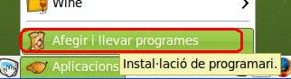
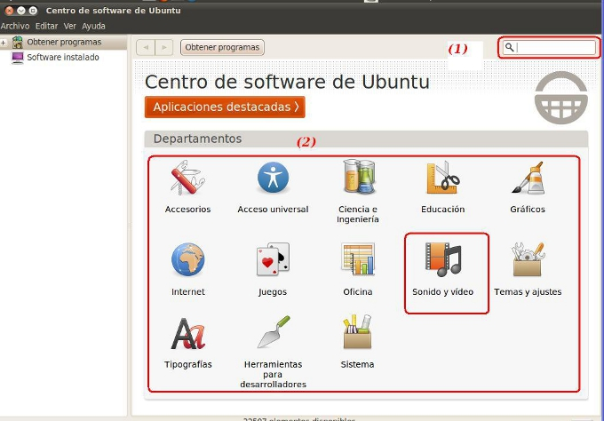
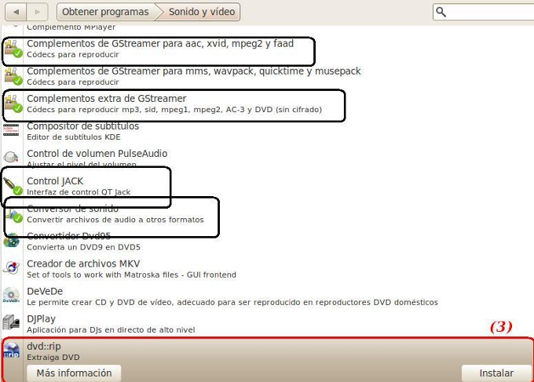

2.2. Centro de Software
Uso de la opción Agregar / quitar programas en en LliureX (Centro de Software de Ubuntu).
En el menú inferior dispones de una opción Aplicaciones / añadir y quitar programas.

Al adentrarnos en la aplicación, esta nos transporta al Centro de Software de Ubuntu.

Dispones de dos posibilidades: (1) introducir el nombre del programa o paquete o navegar (2) por los diversos departamentos. Ejemplo: si deseamos un programa para ripear videos debemos entrar en sonido y video.
En la imagen inferior, señalizados en negro los paquetes que ya tenemos instalado y en rojo el que hemos seleccionado (dvdrip) para su instalación. Haz clic (3) en instalar y se procede a su instalación en el sistema.

Jo.R.C.A. 2004 - 2011

Edición de Audio y Video con Software Libre by José Ramón Cerdeira Alonso is licensed under a Creative Commons Reconocimiento-No comercial-Compartir bajo la misma licencia 3.0 España License